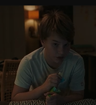
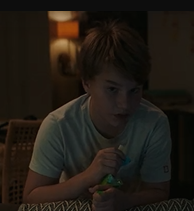
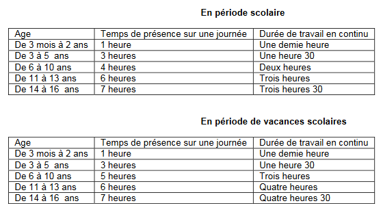
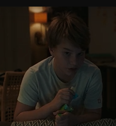

une intime conviction
réalisé par Antoine Raimbault, sorti en 2019.
 Félix, Léo Labertrandie

Félix, Léo Labertrandie

travail de mineur
temps de travail

son
source
réalisé par Antoine Raimbault, sorti en 2019.
Félix, Léo Labertrandie
